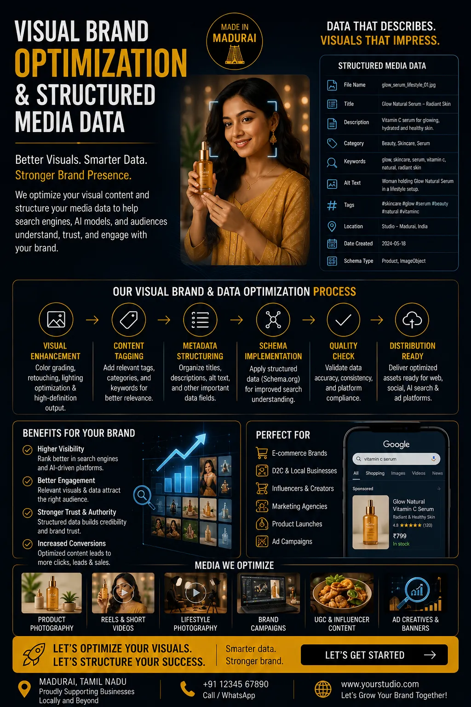
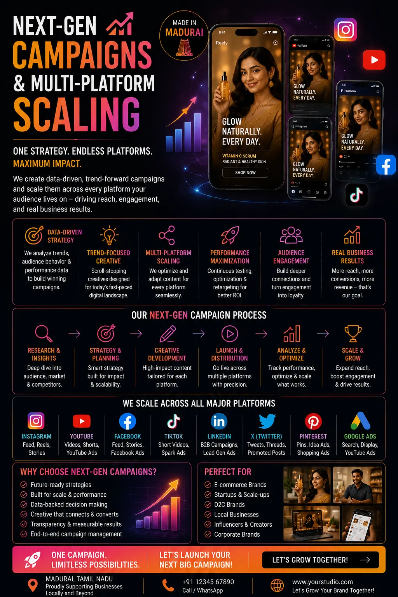

Creating High-Definition Media Assets Optimized for AI-Driven Search Engines
The Search Engine Has Changed. Have Your Media Assets?
Search engines have not looked the same for some time — and in 2026, they look nothing like they did three years ago. AI Overviews summarise search results before a user clicks anything. Visual search surfaces product images directly in response to typed queries. Multimodal AI retrieval systems evaluate images, videos, and structured data simultaneously when determining which brands are surfaced and which are buried. The rules of digital visibility have been rewritten around the capabilities of AI — and the brands that are winning search visibility in 2026 are the ones whose creative media services and production workflows were updated to match.
High-definition digital marketing production optimized for AI-driven search is not a speculative future investment. It is the current production standard for brands that want their visual assets — product photography, campaign videos, brand imagery — to be accurately interpreted, correctly indexed, and actively surfaced by the AI systems that now govern what appears in Google, in visual search, in AI-generated shopping recommendations, and in the multimodal search environments where Indian consumers are discovering and evaluating brands.
This guide covers the specific production standards, metadata frameworks, and distribution approaches that define AI-optimized media asset creation in 2026 — from visual brand optimization and structured media data for websites to next-gen creative advertising campaigns and multi-platform media asset scaling.
What AI-Driven Search Engines Actually Evaluate
To understand what optimizing brand images for search engines requires in 2026, it is necessary to understand how AI-driven search systems evaluate visual content — because the evaluation is far more sophisticated than the keyword-matching and link-authority model of traditional SEO.
Current AI-driven search and discovery systems evaluate visual media assets across several dimensions simultaneously:
Visual Clarity and Subject Recognition
AI image recognition systems categorize the subject of an image — product type, scene context, brand element — based on visual analysis. Assets with a clear, unambiguous primary subject, shot at sufficient resolution for accurate recognition, are correctly indexed. Assets that are visually cluttered, low-resolution, or ambiguously composed are misclassified or underindexed.
Metadata and Structured Data Signals
Machine-readable metadata attached to an image — alt text, file name, Schema.org markup, and image sitemap entries — communicates to the AI what the visual content represents in a format that requires no visual interpretation. Complete, accurate structured media data is a disambiguation layer that ensures the AI's visual interpretation is confirmed rather than corrected by the surrounding data signals.
Technical Quality Threshold
AI-driven platforms — Google Shopping, Instagram's visual search, Pinterest Lens — apply minimum quality thresholds to determine which images are eligible for rich result features. Resolution, compression quality, aspect ratio compliance, and format specification are evaluated automatically, and assets below threshold are excluded from premium placements regardless of their creative quality.
Contextual Relevance Signals
The surrounding page content, the internal linking structure of the website, the domain authority of the publishing URL, and the engagement signals generated by the asset when served to human audiences all feed into the AI's relevance assessment. A technically perfect image on a poorly structured page earns less visibility than the same image on a page with complete contextual optimization.

Visual Brand Optimization: The Production Standard That Makes Assets Machine-Readable
Visual brand optimization begins at the shoot stage — not in post-production, not in the CMS upload workflow, and not as an afterthought to the creative process. The decisions that determine whether a brand's visual assets are AI-readable are made when the camera settings, lighting setup, and composition approach are established. Post-production cannot recover what the shoot stage failed to produce.
The production standards that define visual brand optimization for AI-driven search in 2026:
- Minimum resolution for lossless multi-platform output. Every master image asset should be captured at a minimum of 24 megapixels — sufficient to produce lossless downscaled outputs for every current platform specification, including Google Shopping's 800×800px minimum, Instagram's 1080px standard, and the 2048px width required for Pinterest's high-resolution visual search indexing, from a single master file without quality loss at any output size.
- Clean subject isolation for AI recognition accuracy. Product and brand photography intended for AI-indexed platforms should present the primary subject with sufficient contrast from the background for computer vision systems to cleanly segment the subject. This does not necessarily mean white backgrounds — it means intentional composition decisions that ensure the AI's recognition of the primary subject is unambiguous.
- Colour accuracy calibrated to display standards. AI-driven shopping platforms match product images to consumer search queries that include colour descriptors. A product photographed with an uncalibrated colour profile — warm under tungsten, cool under daylight — is indexed with inaccurate colour attributes that produce mismatches against colour-specific search queries. Colour calibration at the shoot stage is a search visibility requirement, not merely a quality preference.
- Format and compression standards for indexed delivery. Master assets delivered as high-quality JPEG or lossless WebP with embedded colour profiles, at compression levels that preserve detail visible to both human viewers and AI image analysis systems, ensure that the asset meets technical quality thresholds across every platform it is distributed to.
Structured Media Data for Websites: Making Every Asset Tell the AI What It Is
Structured media data for websites is the layer of machine-readable markup that transforms a visually strong asset into a fully AI-indexed one. For Indian brands publishing product photography, campaign imagery, and video content across their own website and third-party platforms, structured media data is the mechanism by which every visual asset is correctly associated with the brand's products, services, and commercial context in the AI's knowledge model.
The structured media data framework for a complete AI-optimized website:
- Image alt text written as descriptive, keyword-specific sentences. Alt text is not a caption — it is the primary text signal the AI uses to interpret an image's subject and context in the absence of visual analysis. Every product image alt text should describe the specific product, its key attributes, and its category in a sentence that a human would write if they were describing the image to someone who could not see it. Generic alt text — "product photo", "brand image" — provides no indexing signal and is equivalent to publishing the image without a description.
-
Schema.org ImageObject markup for every significant asset.
The
ImageObjectschema type allows a brand to associate every published image with structured data that declares its content URL, thumbnail URL, caption, license, creator, and the entity it depicts — giving the AI a machine-readable data record alongside the visual file that confirms and expands on the visual analysis. -
Product schema with image association for e-commerce and catalogue pages.
For brands selling products online,
Productschema markup that associates each product listing with its image assets, price, availability, and review data creates the eligibility conditions for Google Shopping rich results, AI-powered product carousels, and visual search features — none of which are available to product pages without complete structured data. -
Video schema for all published video assets. The
VideoObjectschema type — specifying the video's name, description, thumbnail URL, upload date, and duration — is the structured data requirement for eligibility in Google's video rich results and AI Overview video inclusions. Video content published withoutVideoObjectmarkup is indexable as a page but not as a video asset in video-specific search features. - Image sitemaps for comprehensive visual indexing. An XML image sitemap submitted to Google Search Console ensures that every image asset on the brand's website is submitted for indexing with its URL, caption, title, and geographic relevance declared — providing the AI's crawling system with a complete inventory of the brand's visual content rather than relying on passive discovery during page crawls.
High-Definition Digital Marketing Production: The Technical Baseline
High-definition digital marketing production for AI-optimized visibility is not simply a resolution specification — it is a production philosophy that treats every creative asset as a data point in the brand's AI-indexed knowledge graph as well as a visual communication. The technical baseline that defines HD digital marketing production in 2026:
- 4K video as the minimum master format for all campaign video production. 4K masters enable lossless downscaling to every current platform specification — 1080p for YouTube, 1080×1920 for Instagram Reels, 720p for WhatsApp — without compression artefacts that reduce visual quality below AI platform quality thresholds. Campaigns produced at 1080p cannot be upscaled to meet higher-resolution platform requirements without visible quality degradation.
- RAW or high-quality compressed capture for all still photography. RAW capture preserves the maximum recoverable detail, colour accuracy, and dynamic range for post-production processing and multi-format output — ensuring that a single shoot day produces master assets capable of serving every platform specification the brand will encounter over the campaign's distribution lifetime.
- Lighting calibrated to colour temperature standards. All photography and video production calibrated to a consistent colour temperature — 5500K daylight standard for product photography, with precise correction for venue and ambient light deviation — ensures that colour accuracy is maintained from capture through delivery, meeting the colour indexing accuracy requirements of AI shopping platforms.
- Audio at broadcast standard for all video assets. AI-driven platforms evaluate video quality holistically — audio quality below broadcast standard (−14 LUFS for streaming platforms, −23 LUFS for broadcast) affects the quality score assigned to video assets in algorithmic distribution, reducing their reach relative to technically compliant competitors.

Next-Gen Creative Advertising Campaigns: Building for AI Delivery From the Brief
Next-gen creative advertising campaigns are campaigns whose assets are designed to perform in AI-driven ad delivery environments — where the platform's AI system selects which creative variant to serve to which audience segment, at which moment, based on real-time performance signals — as well as in human-curated placements. The shift this creates in how campaigns are produced and structured:
- Creative volume over single-execution production. AI-driven ad platforms — Google Performance Max, Meta Advantage+, and their equivalents — require multiple creative variants to function optimally. A campaign with fifteen distinct creative assets gives the AI's delivery system fifteen signals to learn from, fifteen audiences to test, and fifteen performance data points to optimize toward. A campaign with three assets gives it three. The production model for next-gen creative advertising campaigns is therefore batch production — multiple executions of the core campaign concept, each with a distinct visual hook, message emphasis, or audience targeting angle, produced in a single shoot and post-production workflow.
- Asset tagging for AI delivery system compatibility. Every asset in a campaign batch should be tagged at upload with the creative dimensions that the AI delivery system uses for targeting and optimization: the primary call to action, the featured product or service, the audience stage (awareness, consideration, conversion), and the visual tone. Complete asset tagging enables the AI to match each creative to the audience segment and funnel stage it is most likely to convert — rather than defaulting to the highest-volume asset for all placements.
- Responsive creative formats built into production. Google's responsive search and display ads, Meta's dynamic creative, and YouTube's video ad sequencing all require assets in multiple aspect ratios and duration formats from the same campaign. Productions that generate 16:9, 9:16, and 1:1 format masters from the same shoot day — and 6-second, 15-second, and 30-second duration cuts from the same video edit — are responsive creative-ready by design rather than by adaptation.
Future of Brand Visibility Assets: What the Next Three Years Require
The future of brand visibility assets is being shaped by three converging developments in AI search and discovery that are already affecting how brand content is indexed and surfaced, and will accelerate significantly over the next three years:
- Multimodal search normalization. Search queries that combine text, image, and voice inputs — "find me something like this [image uploaded] in Tamil Nadu" — are already available in Google Lens and will become the default search behaviour for a significant portion of Indian mobile search users within the current three-year window. Brands whose visual assets are indexed with complete structured media data are positioned for multimodal retrieval. Brands whose assets are indexed as anonymous image files are not.
- AI Overview inclusion as a primary visibility channel. As AI Overviews expand to cover more query types, the source content included in an AI Overview summary earns disproportionate visibility compared to the organic results below. The criteria for AI Overview inclusion favour content with high structured data completeness, clear topical authority, and high-quality media assets — making high-definition digital marketing production and structured media data for websites prerequisites for this emerging visibility channel.
- Visual knowledge graph integration. Google's Knowledge Graph — the entity database that powers rich results, brand panels, and AI Overview sourcing — is expanding its integration of visual assets. Brands that associate their visual content with their Knowledge Graph entity through structured data, consistent image metadata, and complete business profile optimization are building the visual knowledge graph presence that will determine their visibility in the AI-mediated search environment of 2027 and beyond.
Multi-Platform Media Asset Scaling: One Master, Every Platform
Multi-platform media asset scaling is the production and delivery framework that transforms a single high-definition master asset into the full matrix of platform-specific outputs a brand needs without quality loss, rework cost, or production delay. For Indian brands active across Google, Instagram, YouTube, WhatsApp Business, Amazon, Flipkart, and their own website, the number of distinct asset specifications required from a single product photograph or campaign video is significant — and the cost of producing each specification separately is unsustainable.
Photography Scaling Matrix
- Google Shopping: 800×800px minimum, square crop, white or neutral background
- Instagram feed: 1080×1080px square or 1080×1350px portrait
- Instagram Stories / Reels cover: 1080×1920px vertical
- Amazon / Flipkart product listing: 2000×2000px square, pure white background
- Website hero: 1920×1080px horizontal, WebP format
- WhatsApp Business catalogue: 800×800px square
- Pinterest: 1000×1500px vertical, 2:3 ratio
Video Scaling Matrix
- YouTube: 3840×2160px (4K) or 1920×1080px, 16:9 horizontal
- Instagram Reels / Stories: 1080×1920px, 9:16 vertical
- Instagram feed video: 1080×1080px square or 1080×1350px portrait
- Google Display: 1200×628px horizontal, 300×250px rectangle
- LinkedIn: 1920×1080px horizontal
- WhatsApp Status: 1080×1920px vertical, under 30 seconds
Structured Data Scaling Matrix
- Website: Schema.org ImageObject and VideoObject markup on every asset
- Google: Image sitemap submission and Product schema for e-commerce
- YouTube: Full VideoObject metadata, chapter markers, closed captions
- Instagram: Alt text on every image post, complete profile structured data
- Amazon / Flipkart: Complete attribute data accompanying every image asset
- Pinterest: Rich Pin metadata enabling product data overlay on pin images
Conclusion
The brands that will be most visible in AI-driven search in 2026 and beyond are not necessarily the ones with the largest budgets or the most followers — they are the ones whose creative media services and production workflows were built to meet the technical and structural requirements of AI-powered discovery. Visual brand optimization, structured media data for websites, high-definition digital marketing production, and multi-platform media asset scaling are not separate projects — they are the integrated production standard that ensures every asset a brand creates is doing the maximum amount of search visibility work from the moment it is published.
The future of brand visibility assets belongs to brands that treat media production as both a creative and a technical discipline — where the quality of the image and the completeness of the structured data are both non-negotiable, and where every next-gen creative advertising campaign is built for AI delivery as deliberately as it is built for human appeal.
At The PhD Ads, we deliver creative media services built for AI-driven search visibility — high-definition digital marketing production, visual brand optimization, structured media data for websites, multi-platform media asset scaling, and next-gen creative advertising campaigns for Indian brands who want their media assets to be found, indexed, and surfaced by the AI systems that now govern digital discovery.
Key Topics
Ready to Build Media Assets That AI Search Engines Actually Find?
At The PhD Ads, we specialise in high-definition digital marketing production and visual brand optimization for Indian brands — structured media data, multi-platform asset scaling, and next-gen creative advertising campaigns built to perform in AI-driven search environments.
Email: team@e2o.in